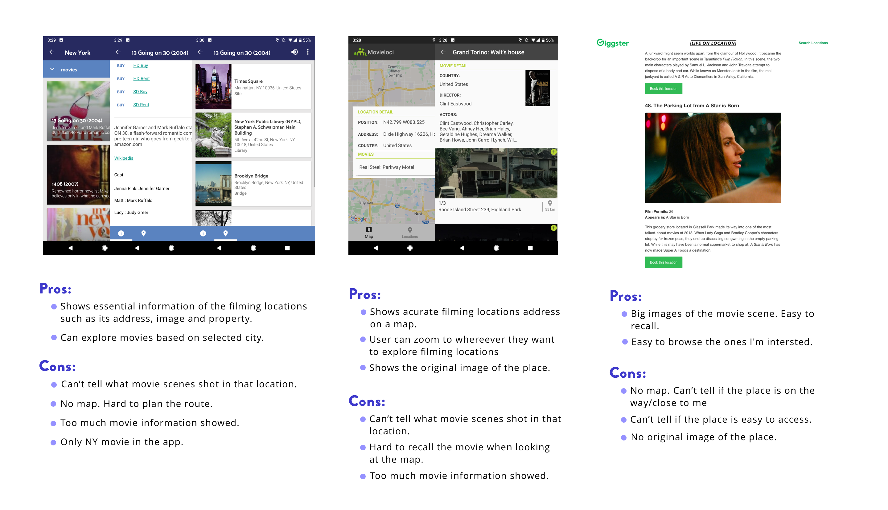
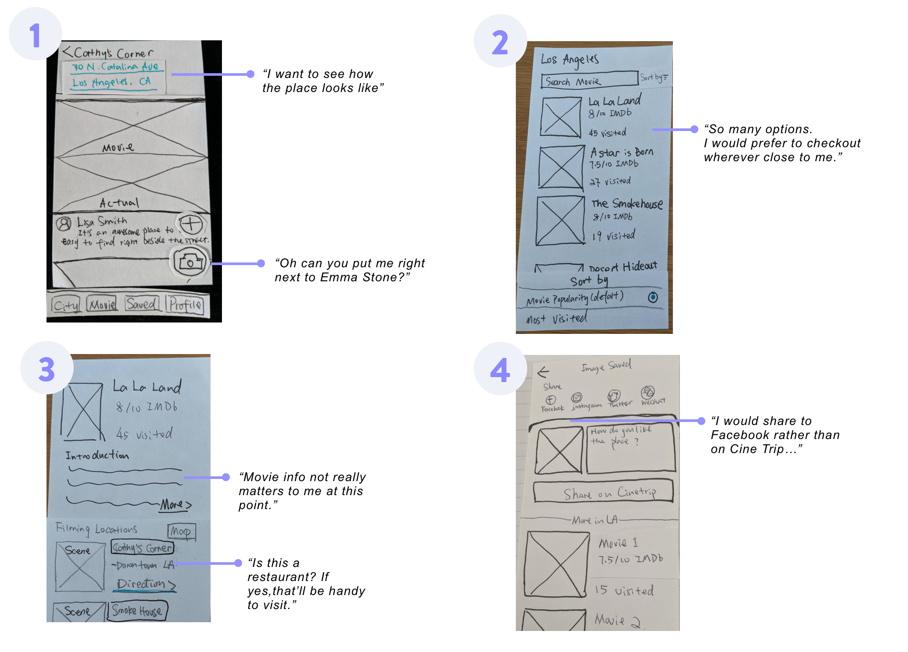
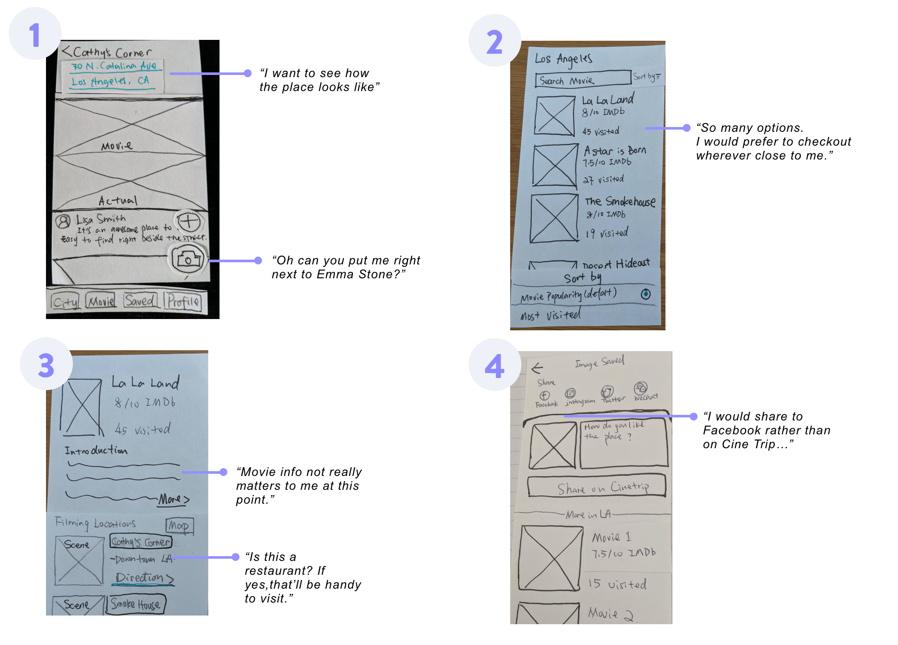
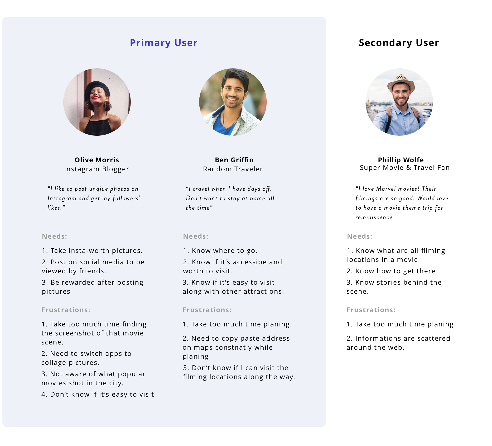
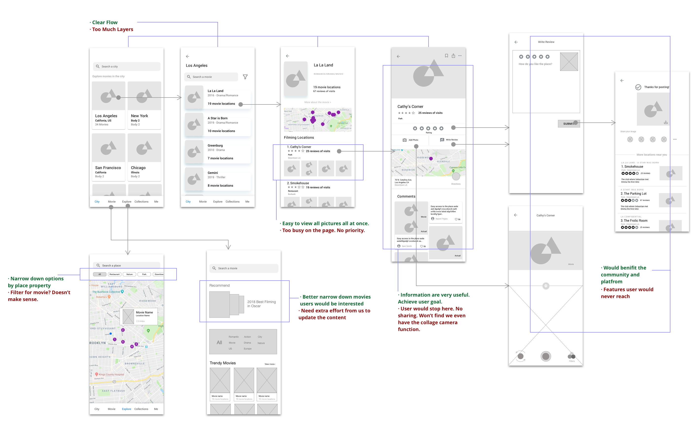

Design Process

UX Design Lead
Project Manager iOS Developer Backend Developer
Adobe XD InVision Sketch Figma
Sep 2019 - Sep 2020 (Part-time)
A scene from a popular movie is powerful enough to catapult an otherwise unremarkable site into fame overnight. However, travelers, who are interested in visiting film locations, have difficulties to aggregate timely location information in a fast and easy way.
Crawling through several web pages to find the filming location.
Manually check places one by one on Google map to plan my trip.
After arriving at the place, you realized it's closed, or it's a private property.
Hard to take movie-like pictures and share to your social media.
Based on the problems above, in a team of three (a PM, a data scientist and me) designed an app - Cine Trip, that helps people find and visit film locations at their convenience. In Cine Trip, people can search film locations without crawling to different websites, easily plan their visits, and take pictures and collage with the movie screenshots.
Recommend you popular movies and film locations based on the city you chose.
Once user opened the app and allowed location access, the app will show the popular movies and film locations based on your current location. From the home page, you can directly check either popular movie or film locations, which is the most essential information people would want to see.
Check film locations on the map. Visually see how you can plan your trip along the way.
Have a half day left in Chicago but don't know where to go? Check out our map! It shows you all filming location nearby. Your can also zoom around and checkout film locations in other cities to plan your next trip.
Check the filming location’s detail, clip annotation and people's comments.
The movie is quite popular and the scene is iconic. But is it still open? Is it Insta-worthy? All your questions could be answered here. A movie-fans community is happy to guide you how to get to there and how to angel the photo.
Within the Cine Trip, collage your photo with the movie scene and easily share to others. No wasting time search for the clip and manually make a screenshot.
You can choose a photo from your gallery or use built-in camera take a picture, then collage with the movie scene. Why not share your nice shot to others? Build the community where people can share tips of accessing the place, take pictures and your memories of the movie. Easy-share on Cine Trip and also to your other social media.
A scene from a popular movie is powerful enough to catapult an otherwise unremarkable site into fame overnight.The most recent example comes thanks to"Joker". In one of its highlight moments, Joker dances down a stretch of steps. The stairs are a functional part of suburb NYC, but thanks to the movie, they’ve grown into a tourist phenomenon. When you do Google search, there's even a new tourist attraction generated called "Joker Stairs". "Joker" is not the only movie that brings so much foot traffic to one place. We could see the same impact from many other movies, drama, and music MVs. However, not every film locations could be nicely marked on Google map.


It took people huge effort to gather movie screenshots, search to figure out which film locations to worth a visit, and plan the trip to visit not only film locations but also other tourist attractions. Some film locations are in the middle of nowhere. You can't just search a place name on Google Map. Sometimes when you finally arrived at the place, it's already closed, or you know you are at the right place but not sure what's the angel to take a photo.

Before getting into design, what's the available tools people can use to gather location information.
Most apps of searching film locations on the market is not really usable. It doesn't show me the essentially helpful information such as 1) where exactly that place is; 2) how it looks like in the scene and in real life; 3) if it's convenient for me to visit. Online forums did a good job on showing screenshots of the movie scenes but it doesn't really help me to decide if I should go.
There's no user-centered design without knowing users' need. We did some secondary research, hosted a participatory design workshop with travelers who visited film locations, and hosted an Airbnb movie walking tour to observe and gather user need. These research helped us to brainstorm and prioritize solutions.

To summarize, we have the following users need:
To get the same framing as the movie shot, travelers might need to walk across the street and stand at the other building. Certain guidance is needed.
During our Airbnb walking tour, we brought travelers to multiple film locations in downtown Chicago. Most of them are from popular movies. We realized if the traveler never heard of this movie, s/he won't even bother taking a picture even though s/he was already there.
People would look at if the location is on the way to their travel destination, how far it is, and its open hours. Especially for people who are not super fan of the movie, it largely depends on their convenience to decide if they would visit this place.
There's a strong need to share pictures people took at the filming location on the social media. People often collage the picture with the movie shot to indicate they visited a filming location.
What we have right now are all assumption. We want to test it out. Because of the time constraint, I decided to make some lo-fi prototypes to test with more target users. Sometimes people don't know what they want until you offer them what you have. Letting users try things out in hand could better validate our assumptions and give us more feedback. In order to find with more people in a short period of time, my teammates and I all did the testing. To eliminate any test bias and make sure we all test in same way, I created a test script and test instructions of do's and don'ts, and walked it through with my team so that we are on the same page. After each test, I would document the feedbacks we got from the user on the prototype, and iterate upon.
 

To summarize, the testing we did validated some of our assumptions and gave us many helpful insights: 1. Users are interested in visiting film locations if that's on the way or nearby. 2. Users care more about location details, reviews and properties rather than the movie information as they pick the movies they like or know pretty well to checkout. 3. Users have high expectations on the camera feature. 4. Users want a way to narrow down options of movie locations to visit. They want an easy way to plan the trip.
Based on the user needs and the gaps in existing products, I summarized the high level goals I hope to achieve with the design.

After all the walking tour observations and user testing/interviews, I summarized all the insights and created the following personas to guide my design and our group discussion. Why do we put "movie fan" as secondary user? We realize that majority of people won't necessarily travel to a place only because of a movie. Most of them will visit film locations if they are "nearby" or "on the way". Therefore, in order to target more users, in the MVP, we focus more on "instagram blogger" and " random travelers".
The primary goal of the first version is to help users aggregate filming location information, decide which place to go and enjoy visiting the places. We have more features ideas for future implementation to better sustain the app which however, are not essential at this time. We want to launch the app and test the market before committing to more features. Therefore, we created this MVP user flow to indicate core features and future implementations.

With the comments we had from initial lo-fi testing, I quickly iterated into mid-fi wireframes. I drew a few different versions for internal discussion and here's one example down below. I hosted 1-2 design critiques every week to quickly iterate based on comments I received.
Since it's a very big project, I can't illustrate all design process page by page. I picked two features that evolves most iterations to demonstrate how I came up with my design rationals.
One big feature to differentiate Cinetrip from other competitors is the user generated content, which inpires others of how to best take the picture and if the place is easy to visit. Therefore, we need to encourage users to share comments so that it can benefits the community and fill up the missing information that we can't offer. I quickly sketched a few alternatives to discuss with my team to see which better make sense to them.
 Examples of alternatives I sketched for discussion
Examples of alternatives I sketched for discussion
From there, we picked one design to move forward and raised new questions. 1. How might we make posting comments looks less time-consuming? 2. How might we make the camera feature more discoverable?
After exploring many alternatives, we picked the ones that could best solve our problems and moved to hi-fi prototypes. I also created multiple alternatives for each feature. Here're a few examples of the alternatives below.

The final design achieved the goal well. When I tested my final design with 5 users. 5 of them 100% clicked on the camera and figured we have the collage feature. They have different understandings where the icon would lead them to, but they all clicked on it.

To launch the product and find Beta testers, we need a website. I designed and developed the official website. I also designed the logo.
Since we are a small startup and have limited resource, we decided to develop the MVP first which has the most essential features. As a designer, I need to push for reaching our end goal through best user experience, while leveraging the cost of development. In certain cases where I have to make compromise, I redesigned some elements to best reach the end goal.
The profile page is where user can check their comments posted and likes received. It's also the best place to encourage them to post more comments once they saw how helpful their comments are. Therefore, I added an "post comment" feature.
Since in reality, we don't have unlimited resources to develop the design we want, I need to do some change. The end goal for this page is to encourage users to post comments. Therefore, I decided to keep the essential features -- showing the number of comments posted and likes received -- in the MVP.
Even though I have rationals for each design I made, sometimes I'm still not sure which one would best work. In such cases, I would design many alternatives and have internal discussion with my team or quickly test them with users. Visually showing people many alternatives leads to faster iteration and better outcomes.
Beta tested using TestFlight
Launched to the app store